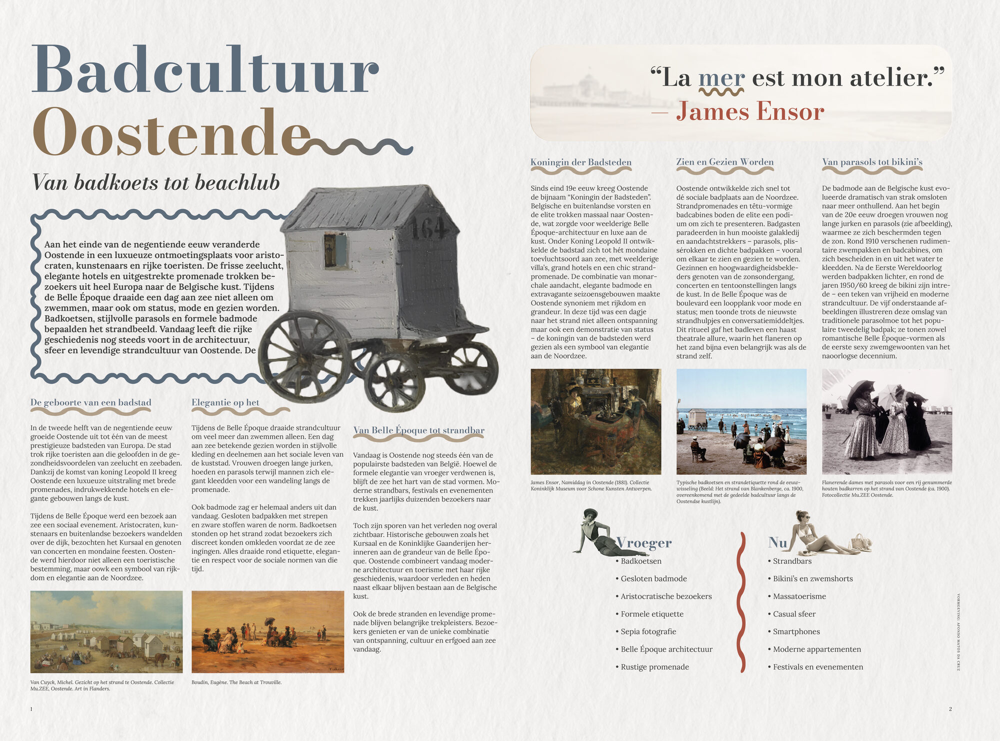
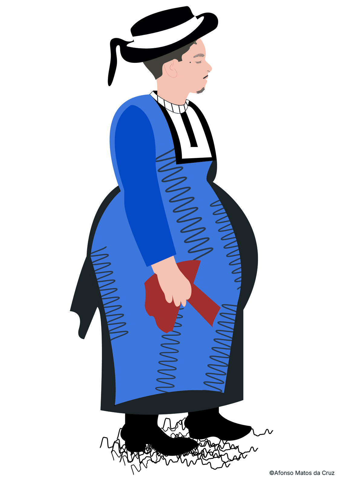

Oostende als koningin der badsteden. Dit project bouwt een volledig visueel identiteitssysteem op rond de historische badcultuur: van de Belle Époque tot vandaag.
Strandcabines, de zeedijk, de Ensor-esthetiek en de maritieme sfeer als visueel bronmateriaal. Een kleurenpalet dat refereert aan badkarren en zilte lucht. Typografie die de grandeur van de belle époque echoot maar volledig hedendaags blijft.
Het systeem omvat een volledige styleguide, een editorial spread, een geanimeerd Ensor-personage en een toeristische HTML/CSS website.


De toeristische website Oostende — Stad aan Zee is opgebouwd in HTML, CSS en JavaScript met eigen animaties. Secties voor strand, zeedijk, culturele bezienswaardigheden, een moodgalerij en contactformulier.
Stack: HTML5 · CSS3 · Google Fonts (Bodoni Moda, Lora) · Flexbox · CSS Animations